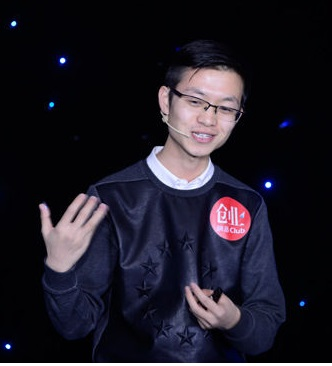

指导老师:罗日才
制作人:刘恒春、吴秀芳、韦云艳、余雨倩
关注我们:

版权:由河池学院13计技班You柠檬© 所有
导语：在杜梦杰看来，年轻人除了喜欢“新奇酷”的东西外，更在乎的其实是能给自身带来成长和改变的经历或者是体验。
编者按：今年8月，IDG资本成立了IDG资本90后创业者基金，意愿用重金支持年轻的、尤其是90后创业者。90后的特质到底是什么？什么是90后的生活方式？为什么要投资面向90后生活方式的创业项目？这些问题回答起来似乎太过庞大，不如，让他们用自己的故事定义自己就好了。

死亡不可怕，可怕的是来到了世界却像从没有来过
杜梦杰，追梦网CEO，生于1989年。在他大四的时候，他身边的大多数人都还不知“众筹”为何物，而他却用近两万字的筹款信在网络上为自己募得旅行经费，实现了休学一年去游学的梦想。他跑到印度去做艾滋病公益项目，在阿富汗给物流公司 CEO 做助理，以参加国际组织、打工的方式陆续游走了印度、尼泊尔、迪拜、巴林和阿富汗五个国家。在阿富汗时，他与死神擦肩而过，也就此萌生了要闯出一片天地的想法，于是决定回国，决定创业。
“那次在阿富汗的爆炸，就在我公司的隔壁，我当时以为是塔利班要冲进来了。我想如果自己真的死在这里也不会成为任何新闻——这是比死亡更可怕的事：你活了这么久，最后你是个没有意义没有价值的人。”
我要帮助别人实现创意、才华和梦想
杜梦杰回国之后花了一个月的时间到处跑：“并不是一开始就想要做众筹。我当时去了很多城市，见一些前辈、和朋友聊天。我一旦决定之后，就会非常认真的准备，仔细的去规划我需要什么、做哪些准备，如何设计。创业也是一样的，决定创业也是一个让我很兴奋的事。但决定做之后我会很理性地去设计，见哪些人、准备哪些东西。这个时候我反而不会急。”
11年5月，杜梦杰去见一个朋友聊创业的思路。朋友说你的经历不就是很多人帮助你么，那如果做一个帮助别人去实现梦想、创意、和才华的平台会不会更好。“我当时想，Bingo!”这个想法让杜梦杰一下子兴奋起来，“那我们就来做这个事。”
有了好的想法，当然不见得就会一帆风顺。创业之初，杜梦杰和他的团队模仿国外做的最大最成熟的众筹平台，去做包括音乐、影视、动漫、出版、科技、游戏等十多个类别的全品类覆盖众筹平台。但每来一个项目他们都要去重新找资源、用户群和推广渠道，用户对他们的网站也很难产生归属感。后来他们试图从这些品类里寻找一个未来有最大发展空间的去做，结果发现没有一个方向是团队能Hold住的，团队里的人都不知道自己在干什么，整个团队面临崩溃。最后，他们还是决定回归初心，从自己喜欢的、自己了解的开始，从做好自己开始。
杜梦杰的团队成员多是20多岁的年轻人，他们的学历背景和个人经历也都十分丰富，这样的一个团队，其实最熟悉的是20岁上下的年轻人在想什么做什么喜欢什么。于是，一个帮助年轻人或者说90后通过众筹，去发现、体验他们喜欢的生活方式的网站定位就此确立。
“追梦网应该有这样一个可能性和机会，众筹让每个人出50、100、200块，一起写本书，一起去开个客栈，一起去旅行，或者其他很好玩儿的东西，这本就是连接用户去参与去体验去获得一个事情的渠道，这本就是在帮助年轻人去发现去参与他们喜欢的东西。”
年轻人的终极目标应该是死在路上
在杜梦杰看来，年轻人除了喜欢“新奇酷”的东西外，更在乎的其实是能给自身带来成长和改变的经历或者是体验。比如像TED、一席等沙龙分享形式的演讲，比如“2015WINTER 香港金融&商业500强名企实习项目”、“跟我一起参加SAS海上学府，到16个国家去学电影吧”这样的关于自我学习、给成长加分的“非售卖产品类”项目。因为年轻人或者说90后这个群体正处于个人成长阶段，他们对这个世界有极大的好奇心，而他们的眼界和见识又驱动他们了解、体验更大的舞台和世界，并且愿意为能让自己成长的东西消费。
今年7月，追梦网与AIESEC(国际经济学商学学生联合会)签署了独家众筹合作协议。AIESEC作为全球最大的学生组织，由青年学生独立运作，致力于提供青年学生发展自身领导力的平台，为青年大学生提供跨国文化交流、海外实习等磨练实践性领导力的机会。而追梦网将为AIESEC海外交流项目提供优质的平台和服务，帮助更多年轻人展示自我、提升能力，完成梦想之旅。
除了与像AIESEC这样的青年相关机构进行合作，追梦网近期还直接推出了“轻松筹”这样一款“一分钟筹款神器”，为大家的创意项目与个人梦想的实现提供了一个更为便利的全新平台。用杜梦杰自己的话说，“年轻人一定要相信自己，要敢于做梦”，他从之前连女生的手都不敢牵，到后来休学、创业，做了很多“离经叛道”的事情，创业过程中也开始越来越“流氓”。而现在的“轻松筹”平台上，无论是技术宅筹钱做一款属于某一群人的游戏，还是肥胖少女筹钱做减肥基金，只要你敢想，你就能在上面玩出不一样的精彩。
杜梦杰说，“我不在乎成功，我只想要有一生不凡的经历”，而追梦网在做的，就是用借力的方式，帮助一个个像他一样的年轻人，在有限的生命里，最大限度发挥自身的才华，让它得到最大的价值。这种利用众筹来实现年轻人生活方式和梦想的模式也得到了IDG资本的青睐。
“我人生的终极目标是，希望在我完成我的事业、教育的梦想之后，跟着我的爱人去环游世界，真正地环游世界，抛下所有的功名家国的枷锁，两个人上路，走完这生命极自有的一程。最后两个人同时死在路上，或我先死她继续上路，或她先死我继续上路，都没有关系，就是让我们生命的尽头，依然在探索这个不凡的世界的路上。”
以上部分内容出自杜梦杰的其他公开媒体访谈
指导老师:罗日才
制作人:刘恒春、吴秀芳、韦云艳、余雨倩
版权:由河池学院13计技班You柠檬© 所有